树和森林
树
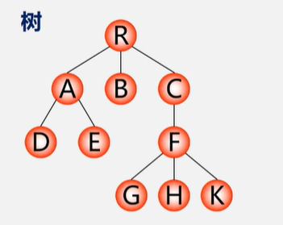
树(Tree)是n[n≥0]个结点的有限集。
- 若n=0：空树
- 若n>0：
- 有且仅有一个特定的称为根(Root)的结点
- 其余结点可分为m(m≥0)个互不相交的有限集T1,T2,T3,...,Tm，
森林
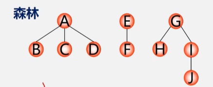
是m(m≥0)棵互不相交的树的集合。
树的存储结构
1. 双亲表示法
实现: 定义结构数组存放树的结点（每个结点含两个域）:
- 数据域:存放结点本身信息。
- 双亲域:指示本结点的双亲结点在数组中的位置。
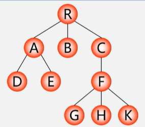
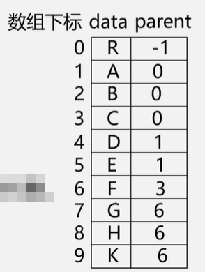
r=0, n=10
- 特点：找双亲容易，找孩子难
结点结构：
typedef struct PTNode{
TElemType data;
int parent;//双亲位置域
}PTNode;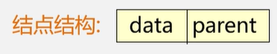
树结构：
#define MAX_TREE_SIZE 100
typedef struct{
PTNode nodes[MAX_TREE_SIZE];
int r,n;//根结点的位置和结点个数
}PTree;2. 孩子链表
把每个结点的孩子结点排列起来，看成是一个线性表，用单链表存储，则n个结点有n个孩子链表(叶子的孩子链表为空表)。而n个头指针又组成一个线性表，用顺序表(含n个元素的结构数组)存储。
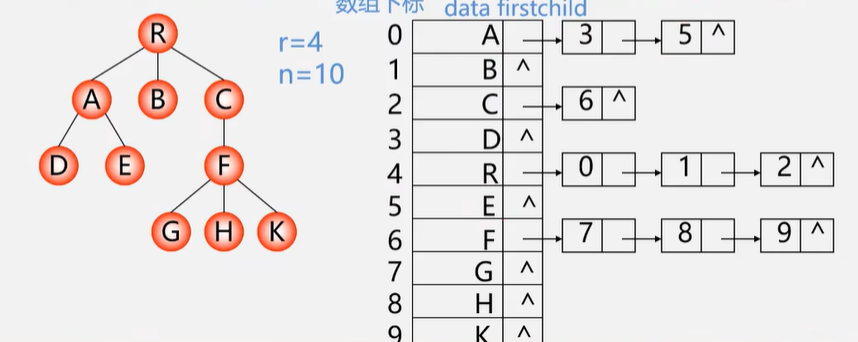
孩子结点结构：|child|next|
typedef struct CTNode{
int child;
struct CTNode *next;
}*ChildPtr;双亲结点结构：|data|firstchild|
typedef struct{
TElemType data;
ChildPtr firstchild;//孩子链表头指针
}CTBox;树结构：
typedef struct{
CTBox nodes[MAX_TREE_SIZE];
int n,r;//结点数、根结点的位置
}CTree;特点：找孩子容易，找双亲难
3. 孩子兄弟表示法[二叉树表示法，二叉链表表示法]
实现：用二叉链表作树的存储结构，链表中每个结点的两个指针域分别指向其第一个孩子结点和下一个兄弟结点
typedef struct CSNode{
ElemType data;
struct CSNode *firstchild,*nextsibling;
}CSNode,*CSTree;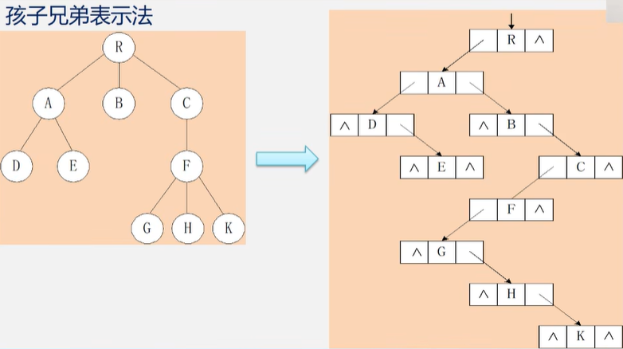
树与二叉树的转换
树->二叉树，利用二叉树的算法实现对树的操作
树和二叉树都可以用二叉链表作存储结构：以二叉链表作媒介
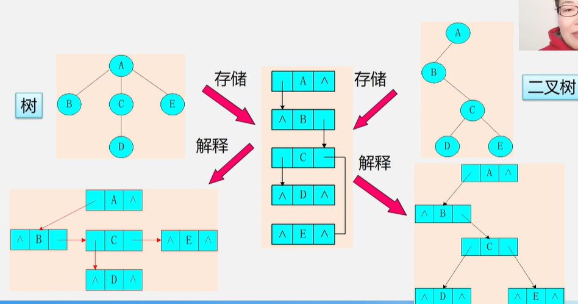
一棵树对应唯一的一棵二叉树
- 树->二叉树（兄弟相连留长子）
- 加线：在兄弟之间加一连线
- 抹线：对每个结点，除了左孩子外，去除与其余孩子之间的关系
- 旋转：以树的根结点为轴心，将整树顺时针转45°
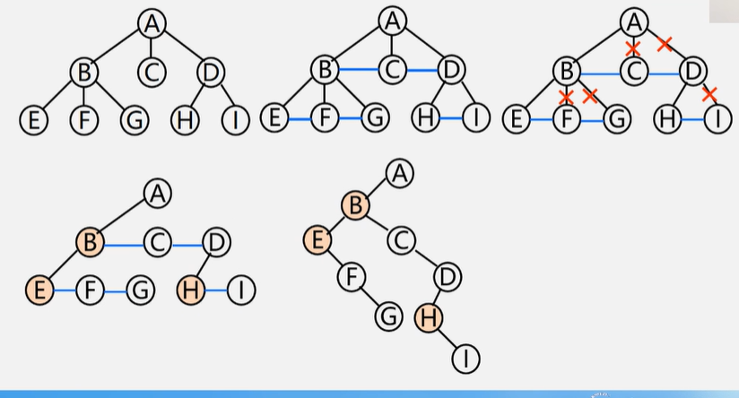
- 二叉树->树（左孩右右连双亲，去掉原来右孩线）
- 加线：p结点是双亲结点的左孩子：p的右孩子、右孩子的右孩子……沿分支找到所有的右孩子，都与p的双亲用线连起来
- 抹线：抹掉原二叉树中双亲与右孩子之间的连线
- 调整：将结点按层次排列，形成树结构
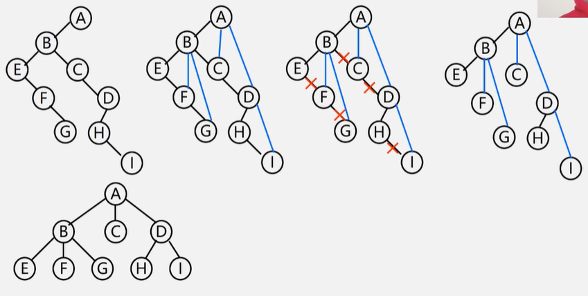
森林与二叉树的转换
- 森林->二叉树（树变二叉根相连）
- 各棵树->二叉树
- 每棵树的根结点用线相连
- 以第一棵树根结点为二叉树的根，再以根结点为轴心，顺时针旋转，构成二叉树型结构
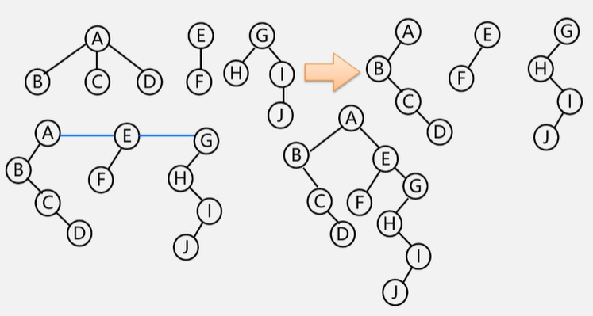
- 二叉树->森林（去掉全部右孩线，孤立二叉再还原）
- 抹线：将二叉树中根结点与右孩子连线，及沿右分支搜索到的所有右孩子间连线全部抹掉，变成孤立的二叉树
- 还原：孤立的二叉树还原成树
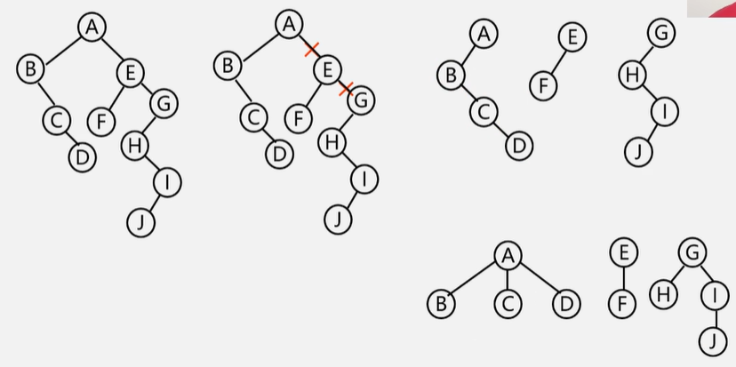
树和森林的遍历
- 树的遍历（三种方式）
- 先根（次序）遍历： 树不空：先访问根结点，然后依次先根遍历各棵子树
- 后根遍历： 树不空：先依次后根遍历各棵子树，然后访问根结点
- 层次遍历：
树不空：自上而下自左而右访问树中每个结点
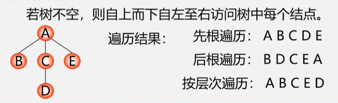
- 森林的遍历
把森林看作三部分：
- 第一棵树的根结点
- 第一棵树的子树森林
- 其他树构成的森林
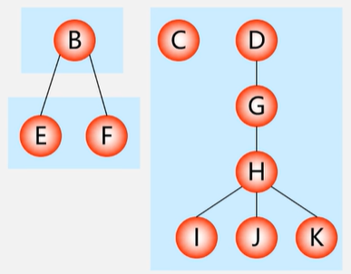
- 先序遍历 — 森林不空：
1. 访问森林中第一棵树的根结点
2. 先序遍历森林中第一棵树的子树森林
3. 先序遍历森林中其余树构成的森林 （依次从左至右对森林中每一棵树进行先根遍历） - 中序遍历 — 森林不空：
1. 中序遍历森林中第一棵树的子树森林
2. 访问森林中第一棵树的根结点
3. 中序遍历森林中其余树构成的森林 （依次从左至右对森林中每一棵树进行后根遍历）